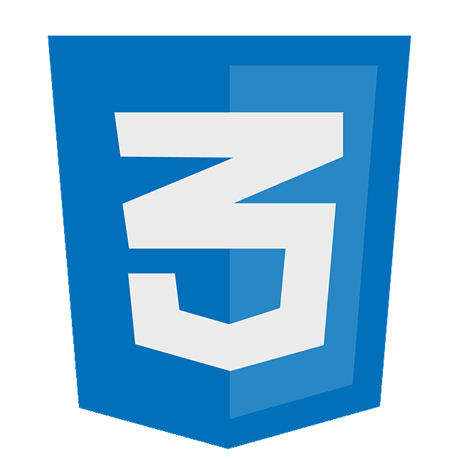
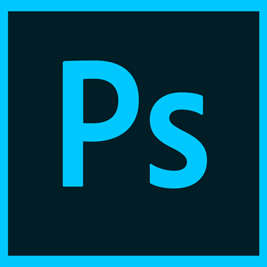

Nazywam się Filip Gieraga, mam 25 lat i pochodzę z Łęczycy. 10 września 2018 roku ukończyłem studia na kierunku Analityka Gospodarcza na Uniwersytecie Łódzkim. Okres ten pozwolił mi zdobyć wiedzę w zakresie finansów, matematyki, statystyki oraz ekonometrii. Na chwilę obecną staram się poszerzać zakres moich umiejętności oraz poszukuję pracy związanej z działem IT, finansami bądź tworzeniem stron internetowych. Okres studiów pokazał mi, że wszystko czego chcę się nauczyć, mogę nauczyć się samodzielnie.
Na ten moment pracowałem w trzech firmach jakimi są:
W każdej z wyżej wymienionych firm zajmowałem się pracą z klientem, ale najwięcej doświadczenie zdobyłem w firmie Fujitsu. Pracowałem tam przez dziewięć miesięcy jako konsultant IT (po ang. Service desk agent). Praca ta była wymagająca, ale dzięki niej dobrze doszlifowałem język angielski zarówno mówiony jak i pisany oraz wiele się nauczyłem. Moim zadaniem było zapewnienie wsparcia dla brytyjskiej korporacji. W firmie Play byłem konsultantem sprzedażowym, a w Ekoimpuls pracowałem jako przedstawiciel handlowy. Prezentowane na stronie umiejętności to efekt mojego samodoskonalenia.
Wordpress to pierwsze narzędzie jakie wykorzystałem do stworzenia swojej pierwszej strony. Obecnie na swoim koncie posiadam już trzy. Swoją stronę również mogłem stworzyć na bazie tego silnika, ale postanowiłem podjąć wyzwanie i stworzyć ją całkowicie w edytorze tekstowym Sublime Text 3. Linki do stron stworzonych przeze mnie znajdują się poniżej.
Podczas tworzenia tych trzech stron nauczyłem się jak:
HTMLa i CSSa uczę się stosunkowo niedługo, ale wystarczająco, aby samodzielnie stworzyć stronę taką jak ta. Wiedzę na temat tych języków zdobyłem dzięki ukończeniu kursu na platformie Udemy (certyfikat ukończenia znajduje się tutaj), wspomagam się również materiałami z youtuba i wszystkim co uważam za przydatne.
Z SEO ukończyłem podstawowy kurs (certyfikat znajduje się tutaj), który dał mi lepsze pojęcie o tym czym jest optymalizacja stron, do czego służą backlinki oraz słowa kluczowe. Pokazał mi również na co zwracać uwagę podczas wyszukiwania fraz kluczowych i jakiej wtyczki do tego używać. Miałem również wcześniej styczność z wtyczką Yoast SEO podczas tworzenia stron w Wordpressie.
Photoshop to program, którym zająłem się jako pierwszym po odejściu z pracy. Podoba mi się jego interfejs i dobrze się w nim odnajduje. Potrafię również używać go z pomocą tabletu graficznego i jest jednym z moich ulubionych programów w ogóle. Poniżej znajdują się przykłady moich prac tj. retusz zdjęcia, grafitti, które najpierw narysowałem, a następnie przeniosłem do programu oraz grafika wykonana z prostych kształtów. Używam go również do tworzenia graficznej części moich stron.
Retusz (przed i po)
Grafitti (przed i po)
Grafika z prostych kształtów
Do moich kluczowych umiejętności należą:
Nie brakuje mi chęci do nauki, a dzięki znajomości języka angielskiego mam dostęp do wielu cennych źródeł informacji. Ze względu na planowaną przeprowadzkę z Łęczycy do większego miasta, moim celem jest znaleznienie pracy na pełen etat w oparciu o umowę o pracę. Interesują mnie stanowiska związane z działem IT, finansami, bądź z tworzeniem stron internetowych. Obecnie zamierzam przejść przez kurs Java Scriptu który znajduje się tutaj.